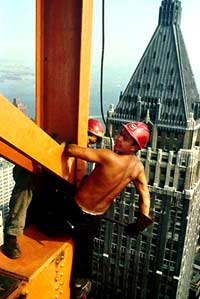
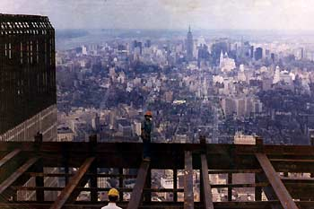
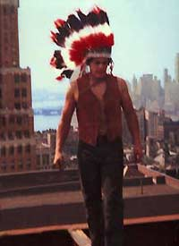
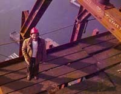
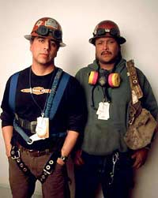
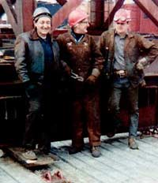

Mohawk iron working began in the 1880s when the Dominion Bridge
Company began a bridge from the Kahnawake reserve across the St.
Lawrence River to Montreal. Employees of the company wrote: "We
would employ these Indians as ordinary day laborers. They were dissatisfied
with this arrangement and would come out on the bridge itself every
chance they got. It became apparent to all concerned that these
Indians were very odd in that they did not have any fear of heights
… We picked out some and gave them a little training, and
it turned out that putting riveting tools in their hands was like
putting ham with eggs."
The Kahnawake Lacrosse team in 1907,
most were killed when the Quebec Bridge located behind them
collapsed. photo courtesy of Kanien’kehaka
Onkawawen:na Raotitiohkwa
By 1907 there were 70 skilled ironworkers from
Kahnawake. Many of these men had been hired to set iron on the
Quebec Bridge, which was soon to be the largest cantilevered bridge
in the world. Just before quitting time on August 29 the bridge's
structure failed and the rivets began to pop. The bridge collapsed
into the river below. Thirty three Mohawk men lost their lives.
The women of the community gathered to await the names of those
lost and made a declaration that never again would a large group
of Mohawk men work together on the same job. Two steel crosses,
one at each entrance to Kahnawake, honor Mohawk ironworkers killed
on the job.

Joe Regis (Mohawk, Kahnawake) and an
unidentified ironworker erecting the Chase Manhattan Bank
Building in New York, ca. 1960.
photo courtesy of Bethlehem Steel
The Empire State Building, The Chrysler Building,
George Washington Bridge, The World Trade Center. For 120 years,
six generations of Mohawk Indian ironworkers, known for their
ability to work high steel, have helped shape New York City’s
skyline.
Each week, hundreds of Mohawks have commuted
to Manhattan from their reserves in Canada framing the city’s
skyscrapers and bridges. In September 2001, after the fall of
the Trade Towers, the sons and nephews of these men returned to
the site to dismantle what their elders had helped to build.

Unidentified Mohawk ironworker on
the World Trade Center, early 1970's
Mohawk History
The Iroquois, a confederacy comprised of six nations—one
of which is the Mohawks—identify themselves as Hodinoso:ni
or “they build longhouses.” The term literally describes
the traditional housing of the Iroquois. The term also refers
to the Iroquoian political structure where, as in a longhouse,
if one piece is removed the structure cannot stand.
"It’s the little man-made mistakes that we try to watch.
You’re always trying to be conscious and communicating well.
Communication is everything. Me and my partner Andy work together
a lot, and we don’t always even have to talk to each other…
It’s hand signals and watching each other." —Brad Bonaparte
»
"Topping out" cardgiven
to ironworkers upon completion of the A tower. courtesy of Peter Stacey » Map
of the Mohawk communities Akwesasne and Kahnawake.
"I was young at the time, the height didn’t bother
me. Once they put me out on the 45th floor. They tied a rope
around me, and they just lowered me over the side, and I would
shoot the bolts in from the outside so they could put the nuts
and washers from the inside. It was a little high over the side—45
floors just with a line but I thought maybe that’s what
they always do."
—Randy Horne, talking
about the WTC.
"That's the thing I want for my
kids the most, to speak Mohawk. I was only home weekends, so there
wasn’t much time. Put the iron up. That was our life. My
father told me a long time ago, try to talk Mohawk a little bit.
That’s our language, try to keep it, don’t lose it."
—Bill O’Hara Oakes
"My mother's brother
was a great ironworker. Her uncles, her father, my grandfather
Junogate Scott, worked on the Empire State Building. My uncle
worked in Brazil, in Chile, in France, he was on the San Francisco
Bay Bridge. Weekends when they came home all they talked about
was the jobs they was on, what they were doing, where they were
traveling. It was great. Especially when you started working yourself.
You could almost do the job, you were talking so much about it
when you were a kid. You knew what the hell to do, no one really
had to tell you."
—Peter LaFleur
"Once in a while you get stuff where
you step back and—aye. You get a second thought about your
next step. Especially when the wind starts. Because when you're
walking a girder or anything the wind is blowing, say from the
north to the nouth. You're leaning north. All of a sudden the
wind stops, say a gust of wind or something like that. Now you're
leaning into it, can you imagine? It stops, and you keep on going."
—Walter Beauvais
"My son fell off, I think he was
up 27 stories, but he was tied off. They didn’t tell me
till two weeks later. When the creator says you are going, you
go. I have to think that way. If I was thinking, oh, my sons are
up there, they’re going to get killed, a mother would go
crazy. So I just put it out of my head. That is what they wanted
to do. That isn’t what I wanted them to do, but seeing their
father and grandfather do that, that’s what they want. They
feel better up there than they do on the ground."
—Rosie
"Tobacco burning means
that you're communicating with the creator and giving thanks to
the creator. You're burning tobacco and it rises up and the creator
knows that you're speaking to him truthfully and honestly and
you're being thankful. So we always carry tobacco—it's just
a little bit of medicine to help you. We always have it close
by."
—Brad Bonaparte
"I remember fog really socking that whole place in. We got
up on the work floor, the Kangaroo cranes stood at least three
floors above that. You couldn’t see it, couldn’t see
anything. And then you’d hear ice crashing down on the floors
below. So we went back down and we reported in the office that
it was too dangerous to work. That was the last time I saw the
Trade Center. But that 110th floor was up."
—Peter Stacey
Radio Broadcast
Produced by: Jamie York and The
Kitchen Sisters
(Davia Nelson & Nikki Silva).
Mixed by Jim McKee at Earwax Productions.
Special thanks to Lynne Beauvais, Kanatakta,
K103 Kahnawake, Kanien'kehaka Onkwawen:na Raotitiohkwa, National
Museum of the American Indian, Elinoar Astrinsky, Elana Berkowitz,
City Lore,
Tony Field, Andy Lanset, Sound
Portraits, Jeffrey Jay Foxx, Mike Swamp, Laura Folger, Paula
Mauro, L.B. Thompson &
Picture Projects.
Meet the people
Randy
Horne working on the construction of the WTC and today.
(Photos courtesy of Kanien’kehaka Onkawen:na Raotitiohkwa
and the National Film Board of Canada)

Peter LaFleur in downtown
Brooklyn, 1969
(photo courtesy of Peter LaFleur)

Walter Beauvais on the World Trade Center,
(photo courtesy of Peter “Doc” Alfred)

Brad Bonaparte and his partner
Andy Jacobs, (photo courtesy of Jeffrey Jay Foxx)

Peter Stacey, far right, and two friends
on the World Trade Center.
(photo courtesy of Peter Stacey)